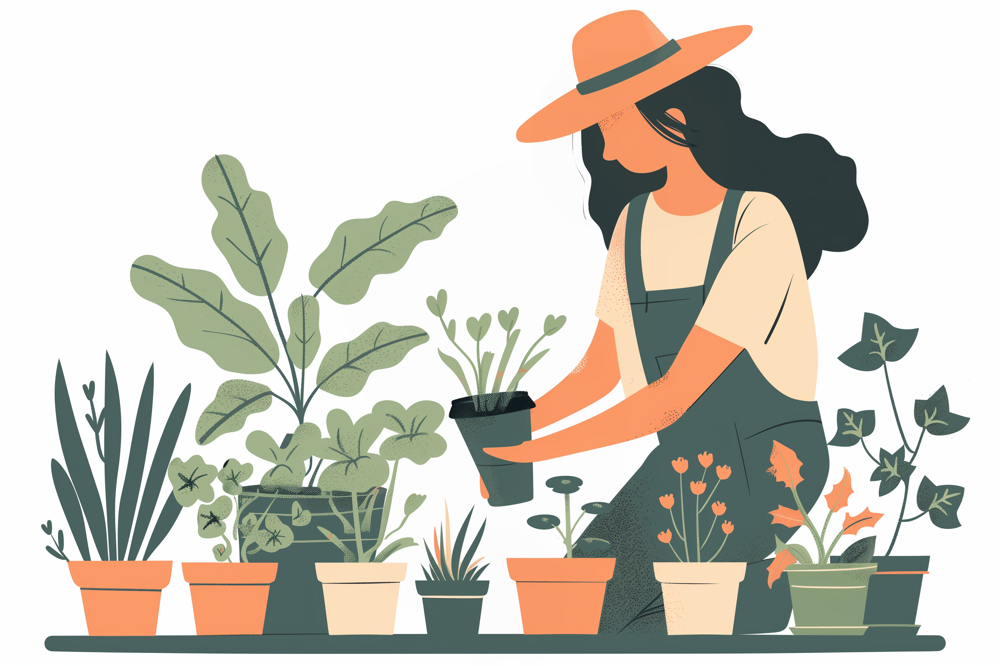
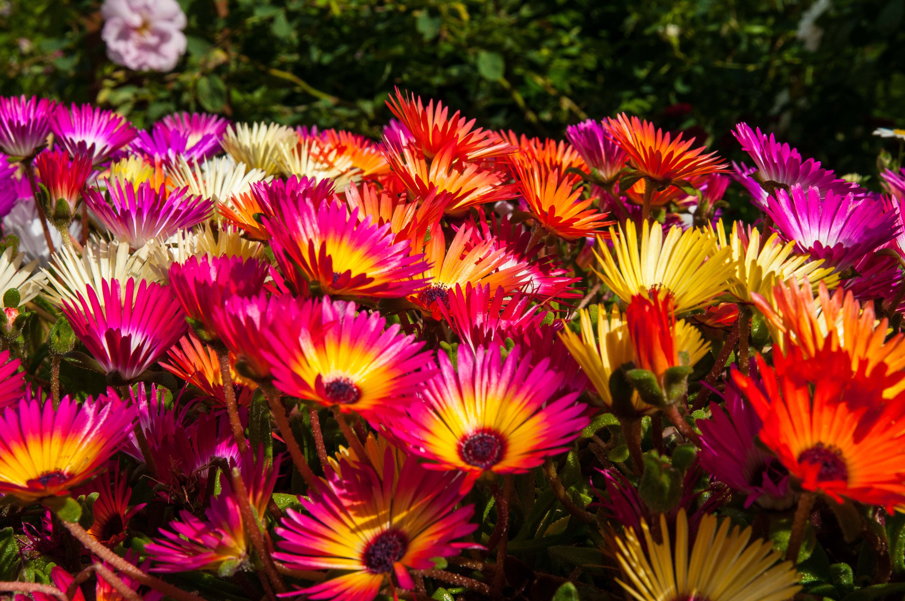

Services
We specialize in creating peaceful, nature-inspired spaces for every home and lifestyle. Our services range from custom garden setups and flower arrangements to organic herb and vegetable garden installations. We also offer regular maintenance and plant care, along with re-potting, pruning, and plant styling for indoor spaces. Every project we take on is rooted in care, creativity, and a genuine love for green living.

Products
Our products are thoughtfully selected to complement every gardening need and aesthetic. We offer a variety of potted plants, from lush ferns and blooming flowers to resilient succulents and herbs. You’ll also find handmade ceramic pots, eco-friendly gardening tools, and natural fertilizers to help your plants thrive. Each item is chosen for its quality, sustainability, and ability to bring a touch of nature’s beauty into your home or garden.

Contact Us
We’d love to hear from you! Whether you’re looking to start a new garden project, need help caring for your plants, or just want to chat about your ideas, our team is here to help. Reach out to us through our contact form or email, we’ll get back to you as soon as we can to bring your garden dreams to life.